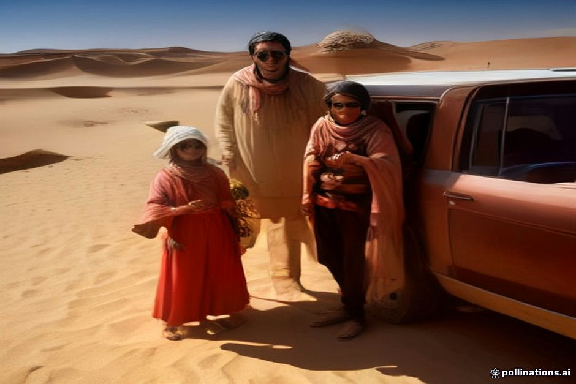

The road from Marrakesh to Erg Chebbi spans roughly 560 kilometers, cutting directly across the High Atlas mountains and down through the pre-Sahara valleys. When you travel this route with young children or elderly family members, the standard three-day itinerary can feel rushed and physically demanding.
We prefer to be honest about the trade-offs: you will spend significant hours in a vehicle, and mountain passes require patience. However, with realistic pacing, proper vehicle selection, and well-timed stops, multi-generational families manage this journey safely every week.
Breaking Up the Tichka Pass
The climb over the Tizi n'Tichka pass starts almost immediately after leaving Marrakesh. The road is winding, steep, and features endless switchbacks that can trigger motion sickness in both children and older adults. Do not attempt to drive this leg in one uninterrupted stretch.
Plan your first proper stop around Telouet or slightly before the summit rather than pushing straight through to Aït Benhaddou. Giving passengers twenty minutes to stretch their legs, use proper facilities, and get some fresh air makes a massive difference in how everyone handles the altitude and curves.
- Keep motion sickness remedies accessible in the cabin, not packed in the trunk.
- Ask your driver to take the curves smoothly rather than rushing the mountain descent.
Choosing the Right Vehicle Setup
Standard shared minivans pack up to six or seven passengers into tight rows, which becomes exhausting for elderly travelers with stiff joints or toddlers who need room to shift. For family groups, booking a private private vehicle is almost always worth the added cost.
A private 4x4 or a spacious van allows you to control the climate, request unscheduled bathroom breaks, and adjust the seating configuration so that grandparents get extra legroom and children have space to manage their bags and snacks.
- Verify that the vehicle has working rear air conditioning before departure.
- Ensure luggage is loaded so that daily essentials remain within reach.
Pacing the Daily Driving Hours
A standard three-day round trip means spending roughly seven to nine hours inside a vehicle on days one and three. For toddlers and grandparents, this is a heavy ask. If your schedule allows, converting the trip into a four-day itinerary drastically reduces daily fatigue.
Breaking the journey with an overnight stop in the Dades or Todra Gorges cuts the longest driving day in half. It turns what would otherwise be an endurance test into a relaxed journey where everyone arrives at the desert camp with energy left to enjoy the dunes.
- Aim for driving legs no longer than two hours without a stretch break.
- Confirm hotel accessibility if traveling with someone who struggles with steep stairs.
Food, Hydration, and Restroom Realities
Roadside cafes along the national routes vary significantly in cleanliness and plumbing standards. Elderly relatives and young children have sensitive digestive systems, so relying entirely on random roadside stops can lead to uncomfortable situations.
Pack a dedicated bag with familiar snacks, plenty of bottled water, hand sanitizer, and your own toilet paper. Plan your main meals at reputable, larger roadside restaurants where guides usually stop, as these maintain higher hygiene standards.
- Avoid tap water entirely; use bottled water even for brushing teeth at stops.
- Carry electrolyte packets in case anyone suffers from heat exhaustion.
| Route Segment | Estimated Time | Family Consideration |
|---|---|---|
| Marrakesh to Tichka Pass | 2.5 to 3 hours | High risk of motion sickness; winding mountain roads. |
| Tichka Pass to Aït Benhaddou | 1.5 hours | Good spot for a longer lunch break and walking stretch. |
| Ouarzazate to Dades/Todra | 2.5 to 3 hours | Ideal overnight break point for multi-generational groups. |
| Gorges to Merzouga Dunes | 3.5 to 4 hours | Flat desert plains; final push before camel trek or 4x4 transfer. |

Illustration, not a photograph — for the real thing, you'll have to stand on the ridge yourself.
Quick answers
A few follow-up questions travelers ask about this.
Is the standard 3-day desert tour too hard for toddlers?
It is entirely doable, but it involves long hours strapped into a car seat. If possible, extend the trip to 4 days or prepare for heavy screen time and frequent stops.
How do we handle the camel ride to the desert camp with older relatives?
Mounting a camel requires flexibility and balance, which can be difficult for seniors or anyone with hip or back issues. Most camps can arrange for a 4x4 vehicle to transport them directly to the camp alongside the camel caravan.
Are medical services available along the route?
Larger towns like Ouarzazate and Tinghir have regional hospitals and pharmacies, but remote stretches of the desert and Atlas mountains lack advanced medical care. Bring all necessary personal medications from Marrakesh.
Planning your own route?
Tell us your dates and what matters to you — we'll answer with a straight recommendation, not a brochure.
Send an inquiry See the itineraries